臨床実習を支える「2つの基幹ポータル」
『INTEVE LINK』
＆
『INTEVE LINK ドキュメント』
実習中の日誌・出欠・評価をつなぐ「実習指導」と、施設への依頼書・承諾書授受を完全オンライン化する「書類管理」。
教員22年の現場知に基づき、教員の発送業務をゼロにし、安心のクラウド環境で実習運営をフルサポートします。
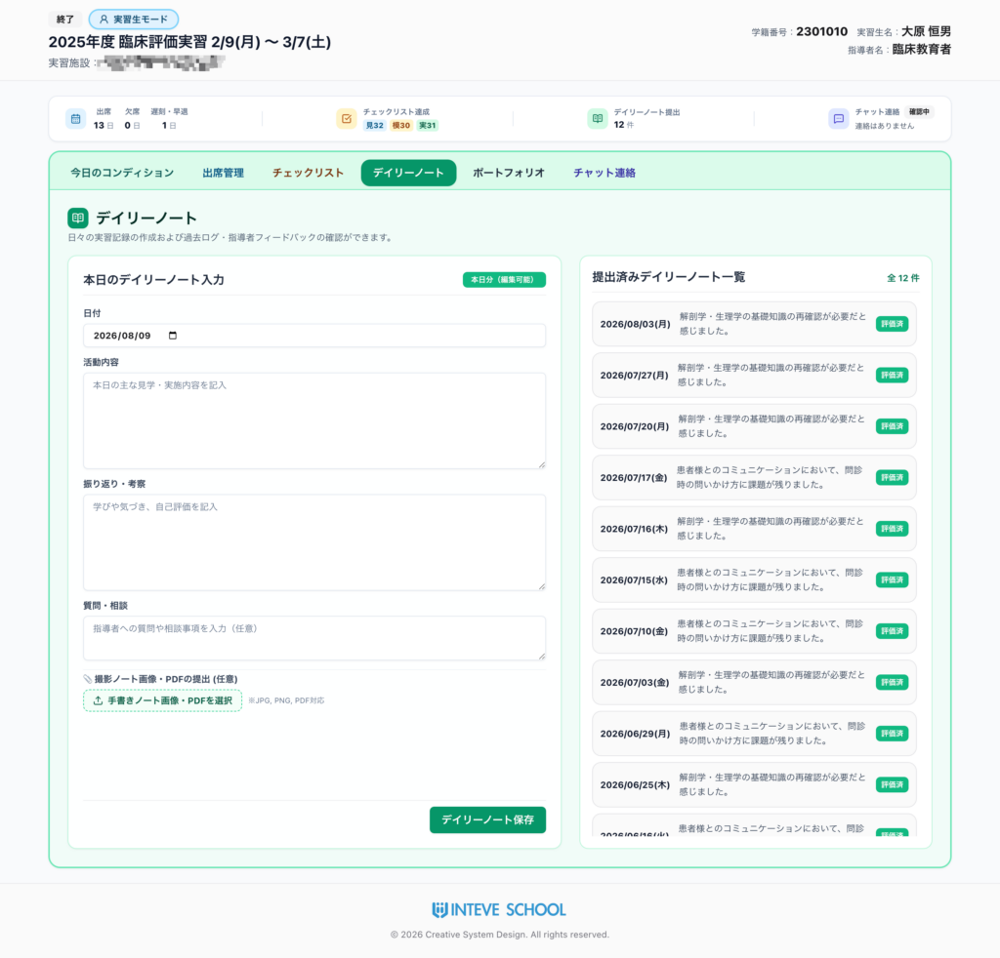
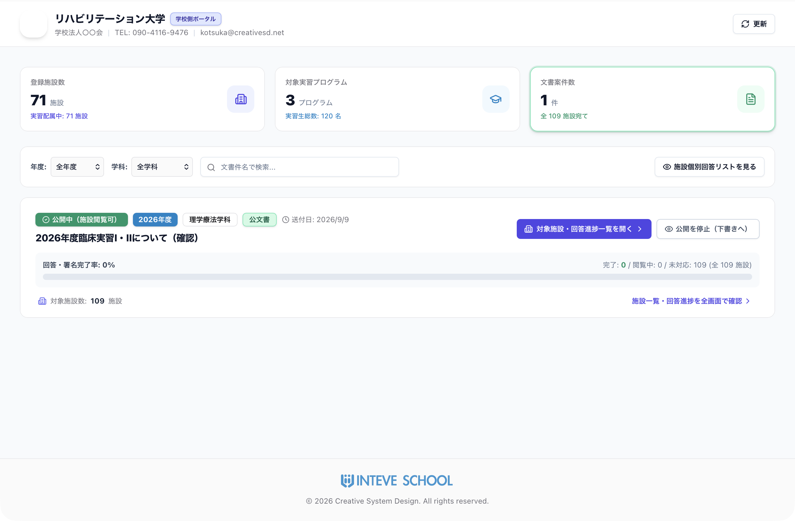
現場の「困った」を根本解決。
臨床実習を支える「2つの巨大な柱」
実習中の「日誌・評価・連絡のタイムロス」だけでなく、毎年学校を悩ませてきた「数百施設への文書郵送・印刷封入作業」……。
INTEVE LINKは、日々の実習指導と施設間ドキュメント管理の双方を完全デジタル化し、持続可能で高効率な実習運営を実現します。
三者リアルタイム共有
実習生、臨床指導者、学校教員が同じWebポータル上で即座に情報を共有。出欠・日誌・症例記録のタイムラグを根本から解消します。
INTEVE LINK ドキュメント
新機能施設への依頼書・承諾書を完全オンライン送受信。郵送料ゼロ、印刷・封入の手間をゼロにし、押印書類もPDF再提出で完結します。
教員専用の安心安全機能
実習生の心理的負担に配慮したコンディション情報、指導者非開示の教員専用ヘルスケアログ、全施設・実習生の一括進捗管理に対応。
郵送料0円・教員の発送作業ゼロへ。
学校と実習施設をつなぐ新基準
『INTEVE LINK ドキュメント』
実習指導の電子化に加え、毎年学校や教員を圧迫していた「何百もの施設への依頼文書の印刷・封入・郵送・回収作業」を根本から変革。
INTEVE SCHOOL®とシームレスに連動し、文書配信から受取確認、回答入力、院長・理事長印の押印回収まで、すべてをオンラインで完結させます。
郵送料が完全 0円
毎年、数十〜数百施設へ発送していた実習依頼文書、要項、承諾書、返信用封筒、切手代などの郵送コストが完全ゼロに。学校運営の経費を劇的に削減し、採用の強力な決め手となります。
教員の発送作業を ほぼゼロ に
膨大な枚数の印刷・丁合、封入、宛名ラベル貼り、郵便局持ち込み、未返送施設への電話確認など、教員を長年疲弊させていた手作業を全廃。本来注力すべき学生指導や研究に時間を充当できます。
施設アカウント 無制限
提携する施設アカウントがどれだけ増えても追加料金は一切加算されません。定額・永続的に使い続けられる圧倒的な高効率・高コスパアプリとして、これからの業界標準を確立します。
初回案内から捺印回収・データ活用までのスムーズな流れ
施設側・学校側ともに迷わないシンプルな導線。紙の郵送よりも圧倒的に早く・安全に完結します。
「登録のご案内」文書を送付
INTEVE SCHOOL®のシステムから初回のみ「INTEVE LINK登録のご案内」文書を施設へ送信し、施設担当者様のメールアドレスを取得します。
施設ポータルアカウント開設
取得したメールアドレスを使用して、施設専用の「INTEVE LINK 施設ポータル」アカウントを開設。安全なログイン基盤を確立します。
施設のUUIDと紐づけて文書配信
INTEVE SCHOOL®から送付した各種文書・書類は、施設の個別UUID（一意識別子）と自動連動。対象施設だけに確実に表示され、誤送信の心配がありません。
文書確認 ＆「見た」チェック・回答
施設側はポータル上で文書を確認し、「確認（見た）」のチェックを入れるほか、受入条件や備考などの回答を入力してワンクリック送信できます。
院長・理事長印も再UPで完結
公印・印鑑の押印が必要な文書は、一度PDF出力して捺印後、スキャンまたは撮影したPDF/画像を再アップロードして送信するだけで完了します。
INTEVE SCHOOL®格納 ＆ データ活用
回収文書は学校側ポータルから一括ダウンロード。INTEVE SCHOOL®本体へ自動格納され、配属履歴や施設情報データとしてフル活用できます。
実際のシステム画面で見る「INTEVE LINK ドキュメント」
学校側ダッシュボードと施設側ポータルの直感的なUI。画像をクリックすると拡大してご覧いただけます。
文書案件進捗ダッシュボード
全対象施設（例：全109施設）に対する文書配信状況を一目で把握。「回答・署名完了率」「完了・閲覧中・未対応」がリアルタイムに集計され、未対応施設へのフォローも迅速に行えます。
文書閲覧・回答 ＆ 捺印ファイル返送
学校からの配布ファイル（PDF）をワンクリックで確認・ダウンロード。返答コメントや受入条件の入力、押印済み公印書類の再アップロード返信もすべてこの画面で完結します。
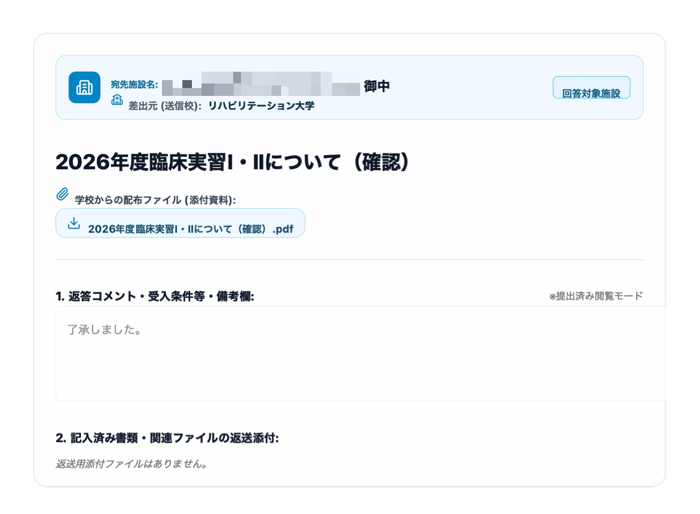
登録施設一覧 ＆ 配属実習生連携
登録施設（例：71施設）と各施設への配属実習生（学籍番号・年度）を一元連携。施設ポータルへの専用URLコピーや個別画面の直接アクセスにも対応しています。
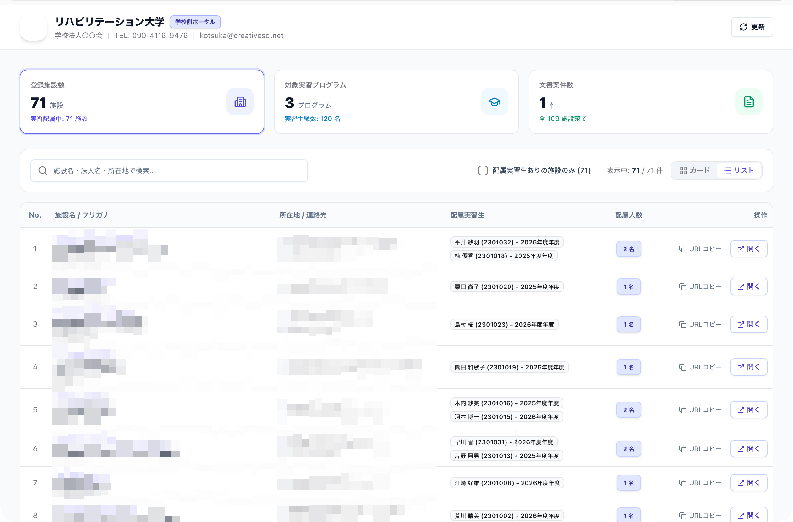
対象実習プログラム管理
「臨床実習I」「臨床実習II」「評価実習」など、各期の実習プログラムごとに受入施設数（36施設、38施設など）や実習生総数、日誌・出欠記録の連動ステータスを網羅管理できます。
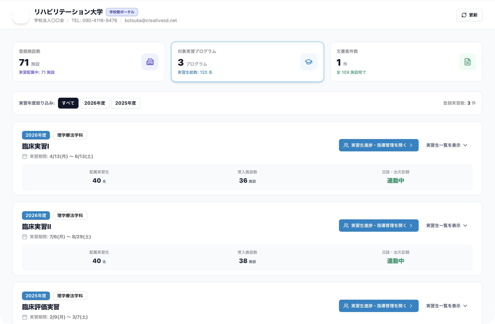
4重の暗号化・行レベルセキュリティ（RLS）による安全設計
個人情報保護や公印文書の不正閲覧防止など、安全な文書共有フローの技術仕様書をご用意しています。
日々の指導をフルカバーする 7つの実習指導コア機能
実習生・臨床指導者・学校教員の三者をつなぐ直感的なUI。PCはもちろんスマートフォンやタブレットから快適に利用できます。
本日のコンディショニング
（メンタル＆ヘルスケア管理）
毎日のコンディション（体調・学び・充実度・リフレッシュ度）を5段階でサクッと簡単入力。
- 安心の履歴＆グラフ表示: 折れ線グラフは「直近1週間」と「それ以前の平均」のみ表示し、実習生の心理的負荷に配慮した設計です。
- 教員専用の安全情報（指導者非開示）: この情報は指導者には共有されず、教員側のみが確認可能。早期のストレス察知や離脱防止、個別の丁寧なフォローに効果的です。
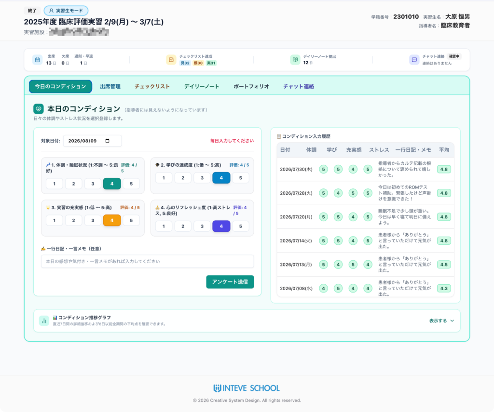
出席管理
（時間算出 ＆ 手書きサイン承認）
出欠区分だけでなく、開始・終了時間の詳細入力に対応。累計の「総実習時間」も自動算出されます。
- 時間ベースの正確な管理: 複雑な実習時間や遅刻・早退などの算出の手間を全自動化します。
- 指導者手書きサイン ＆ PDF保管: 実習最終日以降、指導者画面に「手書きサインボタン」が出現。電子サイン受領後にPDF出力し、正式文書として保管可能です。
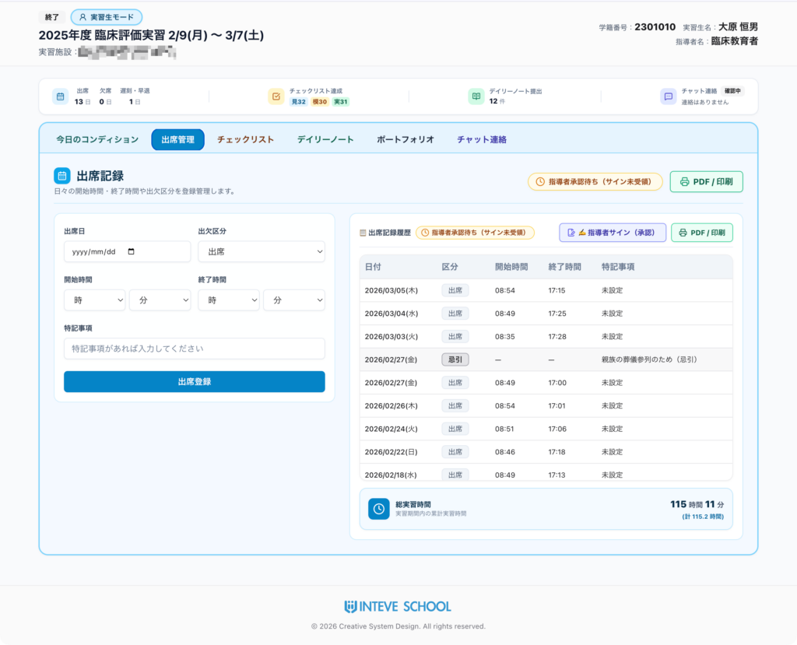
チェックリスト
（評価項目の可視化 ＆ 承認）
学校で現在使用しているチェックリストをそのまま登録・運用可能です。
- 自校仕様完全対応 ＆ キーワード検索: 自校固有の項目を登録でき、検索バーから素早く対象項目を絞り込めます。
- ステップ管理 ＆ PDF提出書類化: 「見学・模倣・実施」などの体験ステップを記録し指導者が即承認。最終日に電子サイン付与後に一括PDF化できます。
-
選べる申請・承認フロー（両方に対応）: 現場の指導方針や運用スタイルに合わせて、2つの登録・承認パターンに対応しています。パターン 1 実習生モードで申請
→ 指導者モードで承認パターン 2 指導者モードで
追加 and 承認
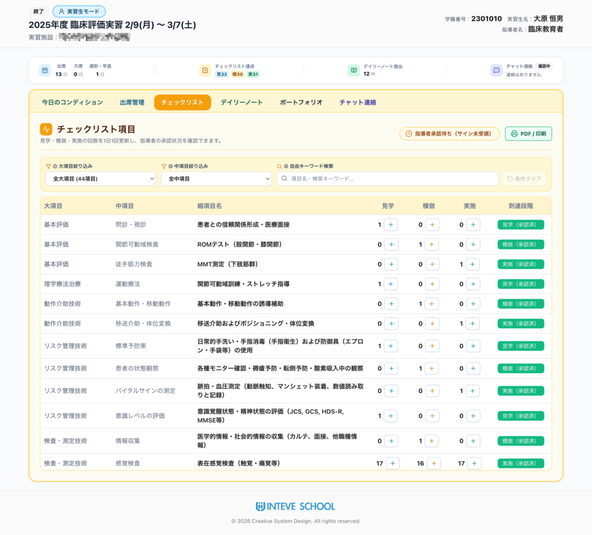
デイリーノート
（日誌・デジタル＆手書き両対応）
日々の実習日誌をWeb上で完結。テキスト入力だけでなく手書き派のニーズにも完全対応しています。
- 選べる入力スタイル: フォーム入力のほか、紙に書いたノートをスマホで撮影して画像/PDFアップロードも可能です。
- 指導者の赤入れ・評価 ＆ PDF出力: 指導者画面で赤入れ画像やフィードバックコメント、承認印を送信可能。いつでもワンクリックでキレイなレイアウトのPDFを出力できます。
ケースノート
（症例記録・パート別指導 ＆ ファイル添付対応）
実習中に担当した症例のカルテ的記録を作成し、指導者との間で細やかな指導・フィードバックのやり取りを行えます。
- パート別・段階的な症例指導: 症例番号・タイトルごとに評価・分析・考察を記録。レポート全体を一括で作成するだけでなく、パートごとの進捗に応じたきめ細やかな指導・アドバイスに対応します。
- テキスト ＆ 添付ファイルに両対応: 学生からの提出、指導者からの返信ともにテキスト入力はもちろん、Office文書・PDF・画像・動画（20MB以下）などの添付が可能。現場の指導スタイルに柔軟に寄り添います。
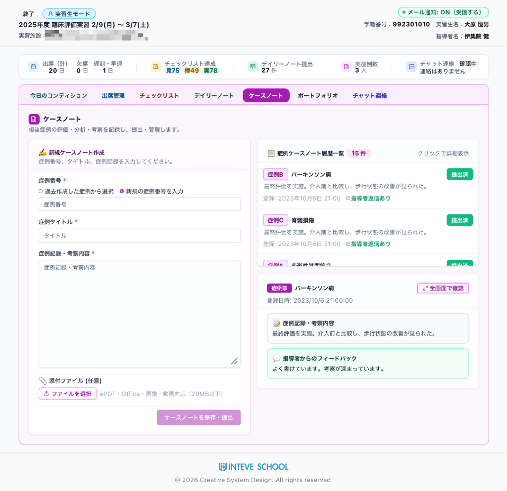
ポートフォリオ
（成果物・ケースレポート管理）
実習中の研究発表資料、ケースレポート、課題などの提出物をオンライン上で一元管理・共有。
- 多角的な資料提出: 文献の引用、参照WebページのURL登録、スマホで撮影したレポート画像やPDFファイルを簡単に提出・共有できます。
- 指導者からのアドバイス蓄積: 提出された成果物に対して、指導者からの具体指導や建設的なアドバイスを資産として蓄積できます。
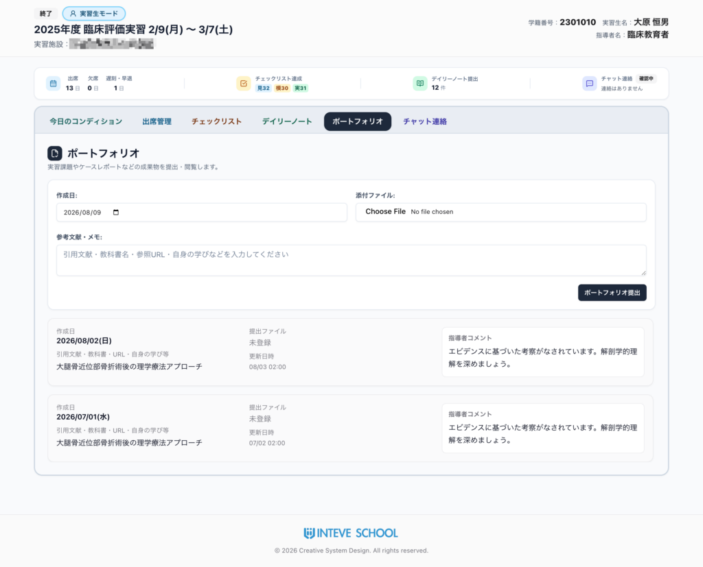
チャット連絡
（三者間コミュニケーション ＋ メール通知）
「実習生 ↔ 指導者」「実習生・指導者 ↔ 担当教員」など、必要な相手へ即座にチャットメッセージを送信できます。
- スムーズな連絡基盤: 電話連絡の行き違いやメール作成の手間を大幅に削減し、やり取りのスピードを劇的に向上させます。
- メール自動通知機能: メッセージ送受信時、受け取り側の登録メールアドレスへ新着通知を自動配信！ポータルを常に開いていなくても大切な連絡にすぐ気付けます。
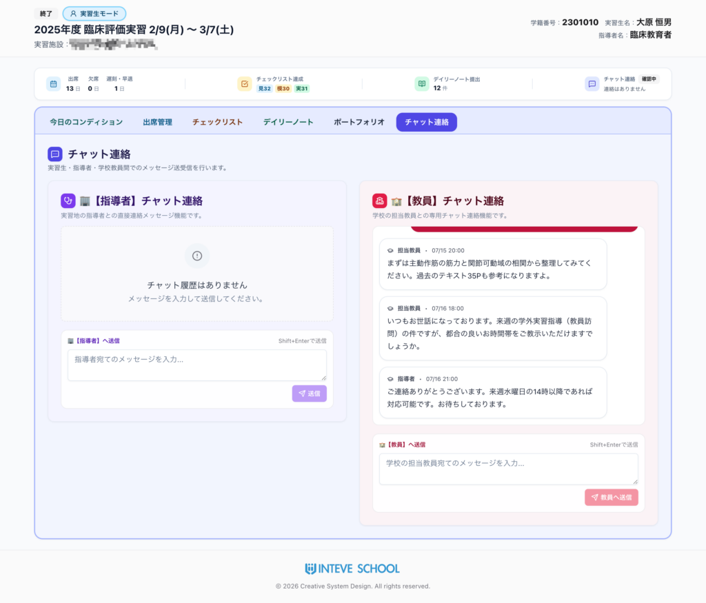
全実習生の状況を一画面で把握。
「実習生一覧ポータル」
教員専用のサマリーページから、担当する全実習生の状況を一目で把握。気になる学生のページへワンクリックでアクセスできます。
概要ダッシュボード表示
各実習生の「コンディション平均」「出席日数」「日誌提出件数」「チェックリスト達成度」を一覧表示。
アラート ＆ 未読通知
コンディション低下や日誌提出の遅れをアラート表示。未読チャットがある場合は強調表示し対応漏れを防ぎます。
実習生プッシュ通知設定
日誌や体調の入力忘れを防ぐため、実習生スマホへの自動リマインド通知を設定可能。配信時刻や土日除外、文面を柔軟にカスタマイズできます。
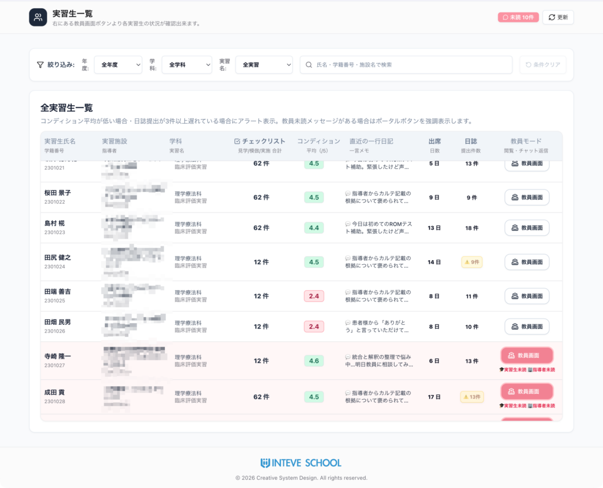
日誌・体調の未入力をゼロに。
「実習生プッシュ通知設定」
教員ポータルから、担当実習生への定期リマインド通知を一元設定。学生のスマートフォン（PWA）へ直接プッシュ通知を届け、日誌やコンディションの確実な提出を強力にサポートします。
配信時刻 ＆ 土日配信の除外設定
毎日18:00などの定刻に自動配信。「平日のみ送信し土日は除外」といった学校方針に応じた柔軟な配信制御が可能です。
通知メッセージの文面カスタマイズ
スマホのロック画面に届くリマインド文面を自由に変更可能。実習時期や指導段階に応じた的確なメッセージを届けられます。
実習期間連動 ＆ PWA登録状況の可視化
実習日程と完全連動し、実習期間外は自動で配信停止。学生のスマホ通知登録台数（iOS / Android別）も一目で把握できます。
病棟などで常時通信ができない環境でも、ホーム画面に追加したPWAからサッと入力可能。休憩時間や施設外への移動時など、電波の届く隙間時間にアプリを開くだけで自動通信・同期が行われます。
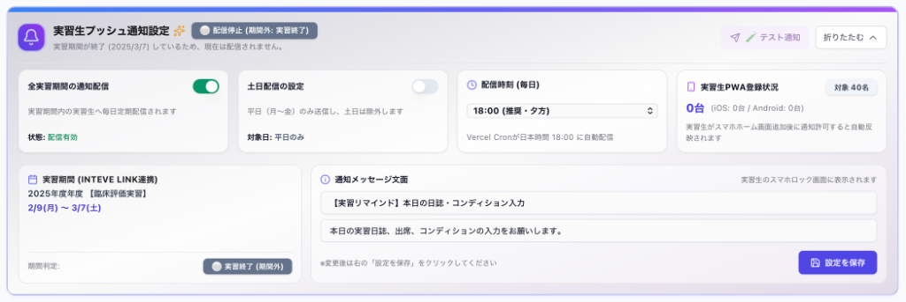
システムの特長・運用のしやすさ
セキュリティ、接続の容易さ、デバイス対応、柔軟なカスタマイズ性で安心してご利用いただけます。
安全な AWS クラウド基盤
世界基準の AWS（Amazon Web Services）を採用。大切な個人情報や実習データを堅牢に防護します。
ワンクリックアクセス
アクセス用リンクは「INTEVE SCHOOL」本体から自動生成。複雑なパスワード管理不要で安全に一発接続できます。
スマホPWA ＆ マルチ端末対応
PCはもちろんスマホPWAに対応。院内での通信制限がある現場でも、休憩時や施設外などの隙間時間にアプリを開くだけで素早く自動同期が完了します。
幅広い医療系養成校に対応
理学療法（PT）・作業療法（OT）・言語聴覚士（ST）をはじめ、各種コメディカルや看護など幅広く対応。自校独自の運用へのカスタマイズも柔軟に対応いたします。
セキュアな基盤を拡張し、「学生・教員マイページ」へ
実習中のやりとりを支える「INTEVE LINK」をベースに、今回追加された「INTEVE LINK ドキュメント」を皮切りとして、今後さまざまな領域へと機能を拡張。「学生マイページ」や「教員マイページ」をはじめ、入学から臨床実習、国家試験対策、就職までをひとつのセキュアな環境でシームレスにつなぐシリーズ展開を計画しています。
学生マイページ構想
開発予定実習の出欠・日誌記録はもちろん、配属先情報や学内連絡、成績や自己学習のログを学生自身が一元確認できる個別ポータル。
教員マイページ構想
開発予定担当クラスや受け持ち実習生ごとの状況、巡回指導予定、施設とのやり取り履歴を教員ごとにカスタマイズして一元集約。
文書（PDF）共有・回収の仕組みとセキュリティ仕様
実習生や実習先施設の個人情報、理事長・院長の公印付き重要書類を安全に取り扱うため、
4重の安全対策と厳格なアクセス制御（RLS）で情報漏洩・誤送信・不正閲覧リスクを徹底排除しています。
安全な重要書類（PDF）の授受フロー
郵送やFAXに代わり、クラウド上で安全・迅速に公印書類の授受・回収を完結します。
(クラウドへUP)
(認証後DL・ご捺印)
(押印PDFを再UP)
(完了回収)
通信・保管の完全暗号化
通信時はTLS/SSLで盗聴・改ざんを防止。保管データもサーバー上で暗号化（At-Rest Encryption）して厳重管理します。
厳格なアクセス権限（RLS）
行レベルセキュリティ（RLS）により、指定担当者・正規アカウントのみにアクセス制限。検索エンジンや第三者への公開を遮断します。
ファイル自体の保護（PDF暗号化）
AES-128/AES-256暗号化に対応。必要に応じて閲覧パスワードや、印刷・テキストコピー・編集制限を設定可能です。
操作ログとトレーサビリティ
「いつ・誰が」閲覧・DL・ULしたかの全履歴をサーバーに記録。紙やFAXのような追跡不能な漏洩リスクを排除します。
文書（PDF）共有・回収の仕組みとセキュリティ仕様書
システムの基本フロー、4重のセキュリティ構造、導入メリットを詳しくまとめた公式仕様書（PDF形式）です。
※ 登録不要ですぐにダウンロード・閲覧いただけます。
臨床実習の管理業務を、
もっとスマートで安心なものに。
システム概要資料（PDF）のダウンロードや、自校の運用に合わせたご相談、
実際にお試しいただける「デモ画面用URL」のご案内も可能です。
※ 概要資料（PDF）のダウンロード画面へ移動します。お気軽にお申し込みください。